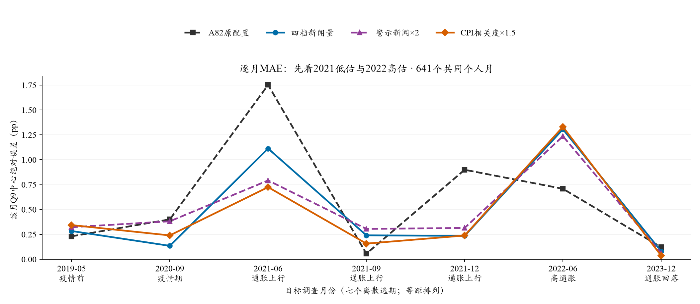
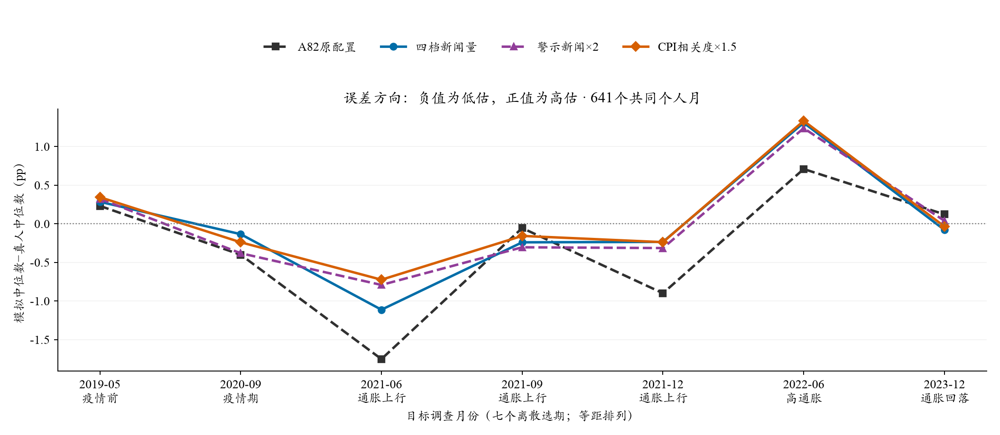
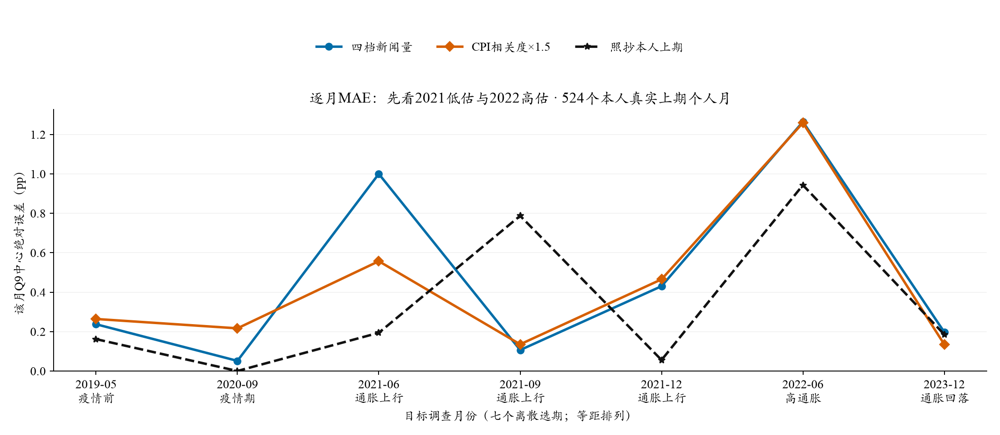

水上挽月 · 2026-10-25 · 冻结结果离线整理 · 0新增API / 0新增Q9拟合
新闻机制：先看MAE与2021误差，再解释分布
当前建议：优先补齐“CPI相关新闻×警示新闻”的联合组。CPI组的七期中心MAE为0.439pp、2021三期为0.374pp，是现有候选中最值得继续的方向；但2021-06仍低估0.725pp，2022-06高估1.331pp，尚不能说已解决异常时期误差。
按用户最新关注，后续先看总体MAE、2021三个样本月及其他时期的误差；再看最大误差、误差方向和稳健性；最后用W1和IQR解释微观分布的收益与代价。分布指标继续披露，但不要求每次中心改善都必须同时改善所有分布指标。这个顺序用于后续研究，不改写旧实验的预设判定。
一、这些数字具体指什么？
每个人的Q9十档概率按原冻结算法拟合连续密度，取个人密度均值，再取同月跨人的设计加权中位数；模型中位数与同支持真人中位数之差取绝对值，最后对月份和两遍等权。因此0.439pp是月度总体中心误差的平均，不是每个人平均只错0.439pp。Q8另外计算。
本批七期各96人，同一人生成两遍，不是每期192个独立人。六组共同Q9有效支持为641个人月；A82仅原一遍。以下是同支持样本比较，不能与82个月全国MAE0.317直接混比。“2021”仅6/9/12月，“其他时期”仅2019-05、2020-09、2022-06、2023-12四点，不代表完整年份。
二、已有实验的整体表现
A82为原归档配置；R0修正重要CPI新闻路由；Q0在R0基础上改为4/8/16/32四档新闻量；Q1在Q0上加警示权重2倍；Q3在Q0上加CPI直接相关权重1.5倍。Q1与Q3尚未叠加。Q2混入Fox，旧结果保留，后续暂停。CPI加权指新闻抽取相关度，不是加权CPI数值，也不是对最终预测做回归。
CPI组相对Q0，整体MAE下降9.5%、2021三期下降29.4%；相对A82原配置，2021三期下降58.6%。但在其他四期，Q3为0.488pp，高于Q0的0.451与A82的0.365pp。这说明收益主要来自改善部分上行时期的低估，不能称全时期一致改善。
三、逐月表现与异常点


- 2021-06低估明显缓解，但仍是难点。A82误差1.752pp，四档新闻Q0为1.113，警示Q1为0.792，CPI组Q3为0.725；真人样本中心5.100%，Q3平均中心约4.375%。方向正确，距离仍不小。
- 2021-09/12已接近，不宜为6月一味抬高所有月份。Q3误差分别0.158与0.239pp；9月优于Q0的0.241，12月与Q0的0.235基本接近。A82原9月误差仅0.056pp，因此“原方案2021很差”不等于每一个2021月份都差。
- 2022-06是最需要保护的高估月份。Q0误差1.307pp、Q1为1.237、Q3为1.331；Q3平均中心7.844%，真人样本为6.513%。警示加权在本月反而略降低预测，不能把“警示”简单等同于上涨信号。
- 疫情期的代价不能被2021改善掩盖。2020-09误差Q0为0.135pp、Q1为0.382、Q3为0.240；警示与CPI单项均退步。2023-12则Q0为0.080、Q1为0.063、Q3为0.036pp，绝对误差已经较小。
稳健性上，Q3两遍相对Q0的整体MAE分别下降0.044、0.048pp；但仅3/7个月改善，删去2021-06后，剩余月平均MAE差变成+0.011pp。Q1整体MAE近持平，但RMSE从Q0的0.679降到0.612pp，说明“整体MAE近持平”并不等于大误差结构完全相同。七个月不足以确认跨时期稳定性。
四、与照抄上期相比，处于什么位置？
只在确有本人真实上期Q9的524个人月中比较，新人不虚构真人上期值。以下Q3为0.433pp，不是上面641支持的0.439pp；基线在这批样本整体仍更好。

例如2021-09，基线误差0.787pp、Q3为0.135pp，模型提供了有价值的当月调整；但2021-06基线0.194pp、Q3为0.557，2021-12基线0.056、Q3为0.465。不能事后挑每个月更好的方法拼接验证成绩。若再评价历史值与模型的组合，必须在较早月份拟权、较晚月份检验，不能在这七期中反复挑最优权重。
五、下一轮交叉实验怎样做？
只增加右下角X_CA：固定新闻池、已审校标签、共同3篇、四档人数、个人历史、非新闻环境、模型、温度和随机流，叠加CPI1.5倍与警示2倍。两条件均满足的文章，加权部分得分乘3；仍有50%均匀抽取与不放回抽样，并非实际曝光概率乘3。不强化文章原话，也不增加一条“应当看涨”的指令。
同七期、96人、两遍，共1,344个联合位置，419个相同提示成功旧答可复用，1个相同提示旧失败保留缺失；只新增924请求，估费$0.94，建议新批硬上限$4。原Q0/Q1/Q3不重跑。模型仍DeepSeek V3.2，经OpenRouter固定SiliconFlow FP8，温度0.5、关闭思考、JSON。当前只有离线输入草稿，尚需官方Core干跑、新版复用执行/评价接线和范围预算授权，不会现在启动。
先看联合组相对最有潜力的Q3是否进一步降低七期与2021三期MAE，同时披露其他四期和最大月误差；尤其检查2022-06高估是否放大。随后查看两遍与删月敏感性，再报告W1/IQR/Q8。四组须统一支持；另外列原641支持上的缺失情况，不因新失败改变样本后直接套用旧平均数。
联合组优于Q3，表示叠加有用；只有进一步计算L(X_CA)−L(Q3)−L(Q1)+L(Q0)，才能在该损失尺度上描述是否超出两单项的相加。MAE与中位数非线性，这不等同于真人行为的因果互补系数。七期都已查看，仍是探索性机制补全，不能称独立验证。
“CPI×四档新闻”本身已经是Q3；现有数据可以分档看差异，不必新增调用。若问题是“旧三档与新四档，哪一种更有利于CPI加权”，才需要可选X_3C旧三档＋CPI组，另472次、估$0.45、建议帽$2。当前优先做X_CA一项，不同时再调剂量或重启Fox。
辅助查看：W1、IQR和独立Q8
主支持真人跨人IQR为5.359pp，Q3只有2.338pp，模型仍过度集中。Q3相对Q0的W1从2.742降到2.668；Q8中心MAE从0.864升到0.907pp。它们用于说明收益与代价，不能替代核心MAE，也不因核心改善而省略。两遍W1方向不一致。
来源：已封存Terminal运行、评价与results_v2/trend_data.json；逐文件哈希已核。原v1/v2、冻结协议、提示与主报告v0.4均保留。连线连接离散选期，不代表中间月份运行。完整12指标折线页 · 交叉草稿及剩余接线